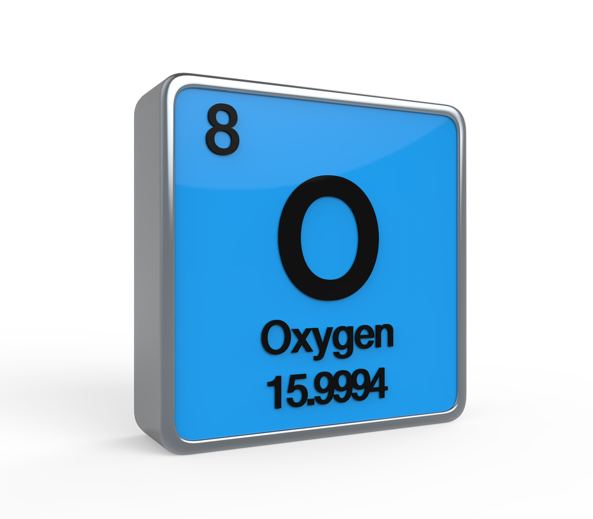

The respiratory system consists of organs and structures that allow us to breathe by taking in oxygen and expelling carbon dioxide. The main parts include the lungs, nasal cavity, sinuses, blood vessels, and various air passageways.
The hollow tube inside the neck that starts behind the nose and ends at the top of the trachea (windpipe) and esophagus (the tube that goes to the stomach). The throat is about 5 inches long, depending on body size. Also called pharynx.
Larynx, also called voice box, a hollow, tubular structure connected to the top of the windpipe (trachea); air passes through the larynx on its way to the lungs.
The epiglottis is a flap in the throat that keeps food from entering the windpipe and the lungs. It's attached to the entrance of the larynx and stands open during breathing, allowing air to flow into the larynx. But during swallowing, it closes to force liquids or food into the esophagus instead
The trachea, commonly known as the windpipe, is a tube about 4 inches long and less than an inch in diameter in most people. The trachea begins just under the larynx (voice box) and runs down behind the breastbone (sternum). The trachea then divides into two smaller tubes called bronchi: one bronchus for each lung.
The lungs are a pair of spongy, air-filled organs located on either side of the chest (thorax). The trachea (windpipe) conducts inhaled air into the lungs through its tubular branches, called bronchi. The bronchi then divide into smaller and smaller branches (bronchioles), finally becoming microscopic.
This thin, dome-shaped muscle separates the chest from the abdomen and is the principal muscle of respiration. As the diaphragm contracts and flattens, it creates a vacuum, pulling air into the lungs. Then when the muscle relaxes, air is pushed out of the lungs.
e bronchi are the airways that lead from the trachea into the lungs and then branch off into progressively smaller structures until they reach the alveoli, the tiny sacs that allow for the exchange of oxygen and carbon dioxide in the lungs.
The bronchioles or bronchioli are the smaller branches of the bronchial airways in the respiratory tract. They include the terminal bronchioles, and finally the respiratory bronchioles that mark the start of the respiratory zone delivering air to the gas exchanging units of the alveoli. The bronchioles no longer contain the cartilage that is found in the bronchi, or glands in their submucosa.
A pulmonary alveoli also known as an air sac or air space is one of millions of hollow, distensible cup-shaped cavities in the lungs where oxygen is exchanged for carbon dioxide. Alveoli make up the functional tissue of the lungs known as the lung parenchyma, which takes up 90 percent of the total lung volume.
The lungs and respiratory system allow us to breathe. They bring oxygen into our bodies (called inspiration, or inhalation) and send carbon dioxide out (called expiration, or exhalation). This exchange of oxygen and carbon dioxide is called respiration.
